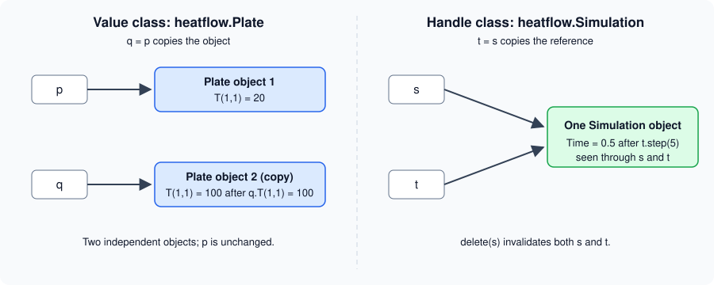

Value and Handle Classes
|
This content was generated with the assistance of AI and should be verified against the official documentation before being relied on in production. |
Written against MATLAB R2026b. Weak references need R2024b. The object lifecycle management described at the end is a beta in R2026b and is not meant for production code. The Octave 11.3.0 sessions below run the two heatflow classes in a reduced form. Octave’s classdef support is partial: it has no isvalid and no copy, and == is not defined on its handle objects, so those parts are labelled "not run here" and are checked against the R2026b documentation only.
Every MATLAB class is either a value class or a handle class. The choice decides what happens when an object is assigned to another variable, passed to a function or stored in a property, and it is the single most consequential decision when writing a class. This page covers the difference, the equality rules, how to choose, and how objects of each kind are copied and destroyed. The syntax of a classdef file is on classdef Basics.
The two kinds
By default, a class is a value class. A class is a handle class when it derives from the built-in abstract handle class:
classdef MyValueClass
% a value class
end
classdef MyHandleClass < handle
% a handle class
end| Question | Value class | Handle class |
|---|---|---|
What does the variable hold? |
The object itself |
A reference (a handle) to an object |
|
|
|
Passing to a function |
The function works on a copy and must return the modified object |
The function works on the same object; it needs no output to change it |
Cleanup |
The object disappears with its variable |
The object lives while something refers to it, or until |
Equality |
|
|
Events, listeners, dynamic properties |
Not available |
Available through the |
MATLAB’s own fundamental types (numeric, logical, char, cell, struct, function handle) are value classes. The documentation shows that after a = int32(7); b = a; a = a^4; the variable b is still 7. Graphics objects such as a line are handle objects, because they stand for a visible thing: after l2 = l1, setting the colour through either variable changes the one line, and delete(l2) leaves l1 pointing at a deleted object.
Value classes: copies everywhere
A value object is tied to the variable that holds it. Assigning it to a second variable, or passing it to a function, creates an independent copy of the object and all its data. The documentation puts it this way: there are no references to value objects, only independent copies. Each property behaves like an ordinary MATLAB array, so the usual copy-on-write optimisation applies and a copy costs nothing until one side is modified (see Matrices and Arrays).
In the heatflow scenario (The heatflow scenario), heatflow.Plate is a value class: it describes a plate, a piece of data, and two plates with the same dimensions and temperatures are interchangeable. A reduced version, in a file Plate.m:
classdef Plate
properties
Nx
Ny
Dx
Alpha
T
end
methods
function obj = Plate(nx,ny,dx,alpha)
if nargin > 0
obj.Nx = nx; obj.Ny = ny; obj.Dx = dx; obj.Alpha = alpha;
obj.T = 20*ones(ny,nx);
end
end
function m = maxTemperature(obj)
m = max(obj.T(:));
end
end
endThe full class declares property validation and the heatflow namespace, which are covered on Properties and Methods and Namespaces and Class Folders.
p = Plate(4,3,0.01,1e-4);
q = p;
q.T(1,1) = 100;
fprintf("p max = %g, q max = %g\n", p.maxTemperature(), q.maxTemperature());Octave 11.3.0 output:
p max = 20, q max = 100Changing q did not touch p. This is why a method of a value class that changes the object must return it, and the caller must assign the result back:
function obj = heat(obj,row,col,temperature)
obj.T(row,col) = temperature;
end
% calling code
p = p.heat(2,2,80); % without the assignment, p would be unchangedValue classes are the better default. Code that uses them has no hidden coupling: a function cannot change an argument behind the caller’s back, an object is always in the state the code that last assigned it left it, and there is nothing to clean up.
Handle classes: shared objects
A handle variable holds a reference. Copying it copies the reference and leaves the data alone, so every copy sees every change. Passing a handle object to a function passes another reference to the same object, so a function can change it without returning anything. The documentation describes the function workspace as holding a copy of the handle, not of the object.
heatflow.Simulation is a handle class: a simulation is a running process attached to one plate, with a clock, a boundary condition and listeners that are told when a step completes. Two simulations are never interchangeable, and a listener attached through one name must hear steps taken through another. A reduced version in Simulation.m:
classdef Simulation < handle
properties
Plate
Dt = 0.1
Time = 0
end
methods
function obj = Simulation(plate)
obj.Plate = plate;
end
function step(obj,n)
obj.Time = obj.Time + n*obj.Dt; % no output needed
end
end
endp = Plate(4,3,0.01,1e-4);
s = Simulation(p);
t = s;
t.step(5);
fprintf("s.Time = %g, t.Time = %g\n", s.Time, t.Time);Octave 11.3.0 output:
s.Time = 0.5, t.Time = 0.5The full class also declares the Boundary property, the StepCompleted event and the real diffusion update; events are on Events and Listeners and the boundary kinds on Enumerations.

Because a handle object has one state, a method that changes it is written as an ordinary procedure, and a method call can be written with function syntax (step(s,5)) or dot syntax (s.step(5)). The class also inherits the handle methods addlistener, notify, delete, isvalid and eq. Deriving from handle is what enables events and listeners, dynamic properties (dynamicprops), the set/get interface (matlab.mixin.SetGet) and weak references.
A handle stored in a property is itself a reference. If a value object holds a handle in a property and the value object is copied, the two copies share whatever the handle points to. This is the usual source of surprises when a value class holds a handle: copying the value object does not copy the object behind the handle.
Equality
For value objects, isequal(a,b) is true when the objects have the same class and the same state. Value classes have no default eq method, so a == b is an error until the class defines one (operator overloading is on Properties and Methods).
Handle objects inherit eq from handle, and there are two different questions:
| Situation | a == b |
isequal(a,b) |
|---|---|---|
Two variables refer to the same object |
true |
true |
Two different objects of one class with equal property values |
false |
true |
Two different objects with different property values |
false |
false |
The documentation illustrates this with a small handle class whose default instances give a == b false and isequal(a,b) true. Octave 11.3.0 agrees on isequal for the heatflow classes, but it does not define == on handle objects (it reports that no eq method is defined), so the == column is not run here:
s = Simulation(p);
t = s;
u = Simulation(p);
fprintf("isequal(s,t) : %d, isequal(s,u) : %d\n", isequal(s,t), isequal(s,u));Octave 11.3.0 output:
isequal(s,t) : 1, isequal(s,u) : 1In MATLAB the same two objects s and u would give s == u false, because they are different objects, while isequal(s,u) is true when all their property values match.
Choosing between them
The documentation’s guidance is that value classes suit data structures that behave like normal MATLAB variables (its example is a polynomial class), while handle classes suit objects that stand for something physical or unique rather than a mathematical value. It lists the cases that call for a handle class:
-
no two instances can have the same state, so exact copies make no sense (list nodes with specific connectivity, serial ports, printers);
-
the class represents visible objects such as graphics components;
-
the class defines events and notifies listeners (
notifyis a handle method) or creates listeners withaddlistener; -
the class needs dynamic properties (
dynamicprops) or the graphics-styleset/getinterface (matlab.mixin.SetGet); -
the class is a singleton, or counts its own instances from the constructor.
| heatflow class | Kind | Reason |
|---|---|---|
|
Value |
Pure data: dimensions, material and a temperature field. Copies are meaningful, equality by state is wanted, and a function should not alter a caller’s plate silently. |
|
Value (enumeration) |
Enumeration members are values; see Enumerations. |
|
Handle |
A process with an identity and a clock. It defines the |
The cost of choosing a handle class is the loss of local reasoning: any function that receives the object may change it. Keep handle classes for the cases above and make the rest values. A class can also keep its mutable state behind a handle property while exposing value-like methods, but that hides the sharing and is best avoided.
Destroying handle objects
A handle object is destroyed in two ways: MATLAB destroys it automatically when nothing refers to it any more (the reference count reaches zero), or the code calls delete on it. Clearing a handle variable is not the same as deleting the object: if another variable, or the parent in a hierarchy, still refers to it, the object lives on. Calling delete(h) destroys the object regardless of the number of references, and every handle to it, in any workspace, becomes invalid.
isvalid(h) returns a logical array that is true for each element of h that is a valid handle. Use it to test a stored handle before using it, because using a deleted handle is an error:
s = heatflow.Simulation(plate);
t = s;
isvalid(t) % true
delete(s)
isvalid(t) % false: the one object is goneThis is not run here: Octave 11.3.0 has no isvalid function. In MATLAB, using a property of the deleted object through t raises an "Invalid or deleted object" error (the exact wording varies by release).
Source: MATLAB documentation: isvalid
Writing a destructor
A class can run cleanup code when its objects are destroyed by defining a method named delete. It is the class destructor only when it is declared as an ordinary method with this syntax:
-
it takes exactly one scalar input, an object of the class;
-
it has no output arguments;
-
it is not
Sealed,StaticorAbstract, and does not use anargumentsblock.
classdef LogWriter < handle
properties
FileID = -1
end
methods
function obj = LogWriter(name)
obj.FileID = fopen(name,"w");
end
function delete(obj)
if obj.FileID > 0
fclose(obj.FileID); % cleanup runs automatically
end
end
end
endNot run here. The if guard follows the documentation’s advice below. Source: MATLAB documentation: Handle Class Destructor
The documentation gives these rules for destructors:
-
MATLAB calls
deleteseparately for each element of an array, so the method only ever sees a scalar. Callingdeleteon an already deleted handle should do nothing and not error, so that it works on arrays mixing valid and invalid objects. -
A destructor cannot cancel the destruction. Inside it the properties are still readable,
isvalidalready returns false, and any new handle to the object created there becomes invalid when it ends. -
In a hierarchy, each class’s
deleteis called, subclasses before superclasses (the reverse of construction). A subclassdeleteaugments the superclass one; it does not override it. -
A destructor should not throw errors, call methods or read properties of subclasses, or create new handles to the object.
-
If a constructor fails, MATLAB still calls
deleteon the partly built object. The destructor must therefore cope with properties that were never set, as theifguard above does. -
The method is called reliably, even when execution is interrupted with Ctrl+C or an error. For cleanup tied to a function’s scope rather than an object, see
onCleanupon Errors, Warnings and Exceptions. -
A method named
deletein a value class is not a destructor, and neither is adeletein a class markedHandleCompatible(below).
Copying handle objects
Copying a handle copies only the reference. To get a second object, derive from matlab.mixin.Copyable, an abstract handle class that supplies a public copy method:
classdef Simulation < matlab.mixin.Copyable
% ... properties and methods as before
end
a = heatflow.Simulation(plate);
b = copy(a); % b is a new object: b.Time = 7 leaves a.Time aloneNot run here: Octave 11.3.0 does not provide copy. The details, from the documentation of matlab.mixin.Copyable:
-
copymakes a shallow copy of all nondependent properties. It does not call the constructor or property set methods, so it has no side effects. It accepts an array and returns an array of the same size. -
The copy is shallow: a handle held in a property is copied as a reference, so the original and the copy share the object it points to. MATLAB does not call
copyrecursively. -
To change this, override the protected
copyElementmethod in the subclass, whichcopycalls once per element. A typical override calls the superclasscopyElementand then copies the handle properties that should not be shared. -
The
NonCopyableproperty attribute excludes a property from the copy.
For a deep copy of the whole object, Simulation can hold its Plate as a value (copied automatically) and avoid handle properties altogether. This is another reason to keep data in value classes.
Handle-compatible classes
A value class cannot normally be combined with a handle class in one hierarchy. A value class declared with the HandleCompatible class attribute can be a superclass of a handle class (matlab.mixin.Copyable itself is handle compatible), and then the subclass is a handle class. A delete method in such a value class is not a destructor, as noted above. Class attributes are on Properties and Methods and inheritance on Inheritance and Abstract Classes.
Weak references (R2024b)
Two handle objects that refer to each other form a cycle. Each keeps the other alive, so neither is released when the code stops using them, and MATLAB must do extra work to find such cycles. A weak reference works like a handle but does not keep the object alive: when only weak references remain, MATLAB deletes the object.
There are two ways to make one. The first is the WeakHandle property attribute, used for back pointers. The documentation’s example has a Library that owns its Book objects strongly while each book points back to its library weakly:
classdef Library < handle
properties
Collection (1,:) Book = Book.empty
end
end
classdef Book < handle
properties (WeakHandle)
Location (1,1) Library
end
endNot run here (R2024b and later). A WeakHandle property must have class validation, and it is scoped to the object that defines it. If the strong owner is cleared, the weak property then shows "handle to deleted" Library; and a weak handle with size validation but no default value starts as an array of invalid handles. Because an object with only weak references is deleted immediately, a statement such as x.Prop = Example; where Prop is weak and no strong reference exists leaves x.Prop invalid at once.
The second way is the matlab.lang.WeakReference class, which wraps a handle in its Handle property and can be stored in places that cannot declare an attribute, for example as the values of a dictionary used as a cache (see Dictionaries and containers.Map). The documentation notes that the property attribute is more flexible because it supports property validation. matlab.lang.invalidHandle and matlab.lang.HandlePlaceholder are related utilities named on the same page; delete on an object removes it regardless of weak or strong references.
For heatflow, a weak reference suits a monitoring tool that wants to look at a Simulation without keeping it alive.
Object lifecycle management (R2026b beta)
Today MATLAB reclaims an object the moment its reference count reaches zero, and also detects orphaned cycles and deletes them immediately, which costs bookkeeping. R2026b ships a beta in which objects with a count of zero are still destroyed immediately, but cycles are collected by a garbage collector with less frequent sweeps at convenient moments (for example when MATLAB returns to the command prompt). The stated benefits are faster object creation and deletion and faster property access.
The consequence for class authors is that cycles may be destroyed at different times and in a different order than before, so code that relies on a destructor running at a precise moment, or in a particular order, for objects in a cycle may break. The release notes describe the feature as a beta available through a File Exchange download, and the documentation says it should not be used for production or development activities. Avoid depending on the timing of delete for cyclic structures, and prefer weak back pointers, which avoid cycles in the first place.
Where the books are outdated
Older books and tutorials often call handle classes the only way to get object-style programming, or show reference semantics through the old function-style classes. Today value semantics are the default, and handle classes are for the specific cases above. Books also pre-date several features covered here: matlab.mixin.Copyable is long established, but weak references (R2024b) and the lifecycle beta (R2026b) are new, so cycle handling in older texts relies on manual delete calls. Check the exact release of any older error message quoted for a deleted handle; the wording differs between releases.